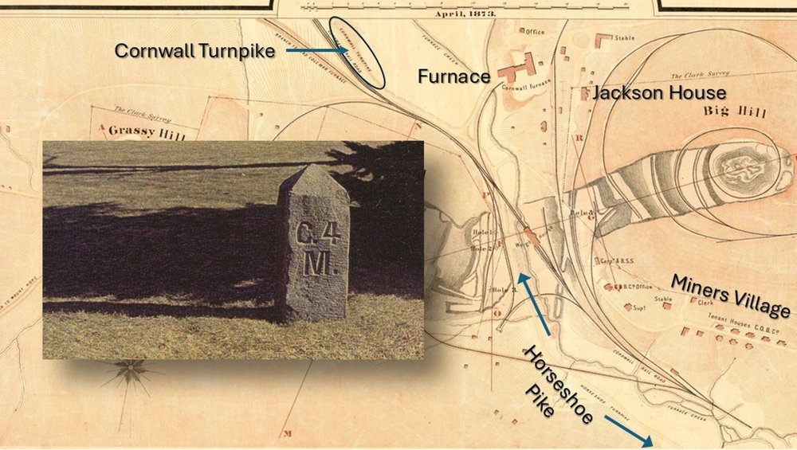
Seat-belts fastened? In this installment we time-travel the Cornwall turnpike.
Amid the daily hustle along one of two north-south routes connecting Cornwall and Lebanon, one no longer recognizes its former importance. The Cornwall road connected iron commerce to the Union Canal, leading to the industrialization of Lebanon.
Other than the road itself, so little of that remains. Instead, increasing traffic serves medical offices, condominium developments, and the county fairgrounds. Try imagining instead the slow-and-steady clop-clop of hooves on wooden planks, the whistle of a steam engine, and possibly the subtle roar of blast furnaces in the distance.
In Part 2, we had left off describing the "twists and turns" of the Horseshoe Pike, chartered in 1802 and completed in 1829, passing nearby Cornwall's Jackson House and serving the local iron industry. With Part 3 we ready ourselves at the point where the two roads diverge (apologizing to Robert Frost) and consider the northward route departing from the Cornwall mines.
Motorists traveling north out of Cornwall on aptly named Cornwall Road would be surprised to learn that the journey does not start at that confusing corner at Cornwall center by the school, church, and Miner's statue. No, it starts further south, a bit past the Cornwall Iron Furnace at the mines, below the hill where Jackson House sits.
Motorists might be further surprised to learn that the familiar route up Cornwall Road past the Bluebird Inn isn't the way things were back in the day; two points to ponder as we start our journey.
To the first point, the 1873 map from the previous installment showed the Horseshoe passing in between the Cornwall mines. This time, take note of the Cornwall turnpike (circled in the image above), known today as "Cornwall Road."
The two roads ran together, forming today's "Rexmont Road," passing the fire station, the Borough offices, the former Grist mill, miller's house, and Stone Arch. As the Horseshoe Turnpike departed, heading west on Alden Street, the Cornwall turnpike continued up through Cornwall, bending around the shale formation by the Grist mill, past the Cornwall Inn, the iron bridge, and the train station (Borough Police) to points north.
Of course, in the 1850s, other than the Grist mill and house, none of those features existed.
Later, constant reorientation of railroad grades to serve the expansion of mining, and the construction of the Bird Coleman furnaces in the 1870s, changed the landscape to what we recognize today.
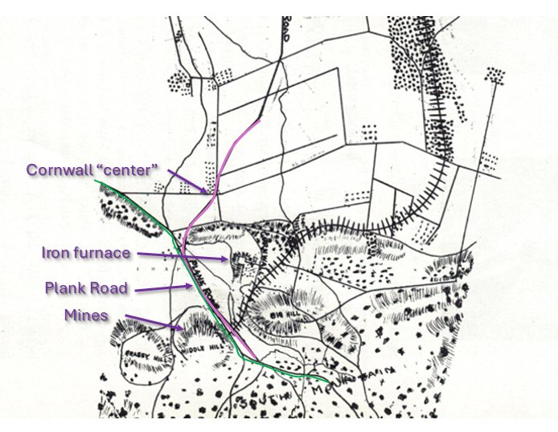
No mention of the Stone Arch would be needed, because that feature, along with the iron railroad bridge, was not built until the 1880s.
The Cornwall turnpike was built in 1852 to transport ore and iron products from the mines and furnace to the "new" Union Canal. But transportation modes were evolving rapidly in the mid-19th century. The Union Canal would be closed in the early 1880s.
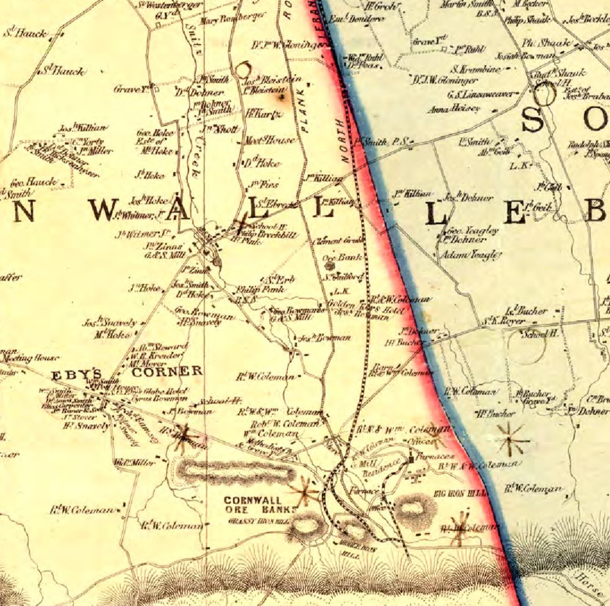
The Cornwall railroad had begun servicing the mines after 1855. The plank road is shown originating just above "Middle Iron Hill," roughly where the Cornwall Borough Fire Department is located today.
The plank road, drawn with hash marks representing the planks, proceeded due north to Lebanon and followed the east side of the Wm. Coleman estate in Cornwall. This same estate became the 198-acre "Freeman Trust," of recent interest in Borough public meetings.
But the earlier road out of Cornwall was originally today's "North Cornwall Road" that bent westward to intersect Zinns Mill, then proceeded north into Lebanon at 9th Street. The original road passed across the property of William Coleman, father of Robert H. Coleman and Anne Caroline Coleman Rogers. The road passed by their "Cornwall Cottage" (Anne's birthplace) and the old barn, and the adjacent farm further up, which still stands.
The road turned slightly to the west, following the path of Snitz Creek, up "North Cornwall Road," proceeding over to Zinns Mill.
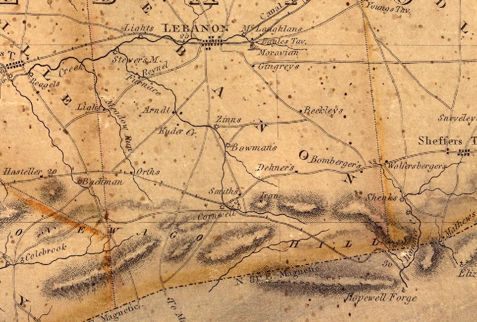
An 1816 map of Lebanon County adds confirmation. The "9th Street" road heads due south to Zinns Mill. Colebrook road splits off to the west. At Zinns Mill, the road splits again: one heads down to Manheim, the other down "North Cornwall Road" to Cornwall.
When the plank road was built in 1852, for practical and economic reasons they chose a more direct route connecting 10th Street at Lights Landing south to Cornwall and down to the mine.
The existence of road markers confirms that new path.
10th Street Landmark
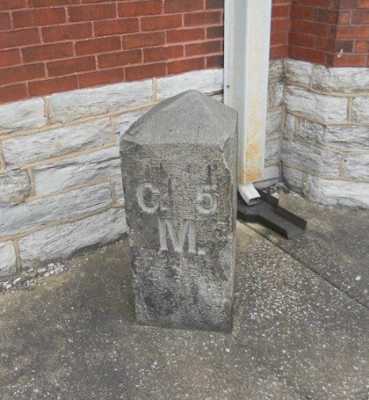
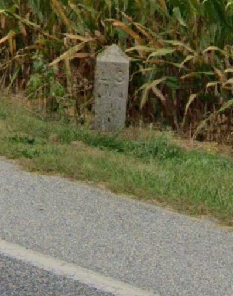
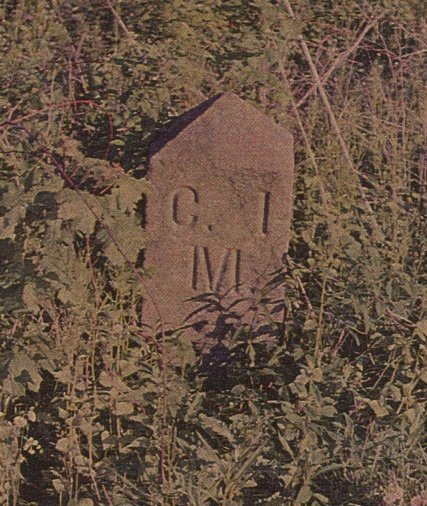
The road company installed markers at every mile. At least two remain, testifying to the presence of the former plank road. One survives, embedded in concrete at the intersection of 10th and Chestnut Streets, a visible reminder in the 21st century.
Another marker still stands just south of Zinns Mill Road at the edge of a cornfield. Several others are known to have been removed to private property. The marker proves the new path south from Lebanon, passing Artemas Wilhelm's farm, down past the fairgrounds (first held 1957), crossing Zinns Mill Road, past the Bluebird Inn (built several years later in 1859), past North Cornwall Road, Toy Town, to the center of Cornwall.
The Union Canal
The Union Canal had been envisioned by William Penn in the late 17th century, one hundred years before its inception. Its history is well-told in resources from the Lebanon County Historical Society, which still operates the canal boat tour by the Tunnel Park.
Construction began in 1792, but due to financial difficulties it took until 1828 to open. When opened, it created a new path of transportation for ore and pig iron from Cornwall.
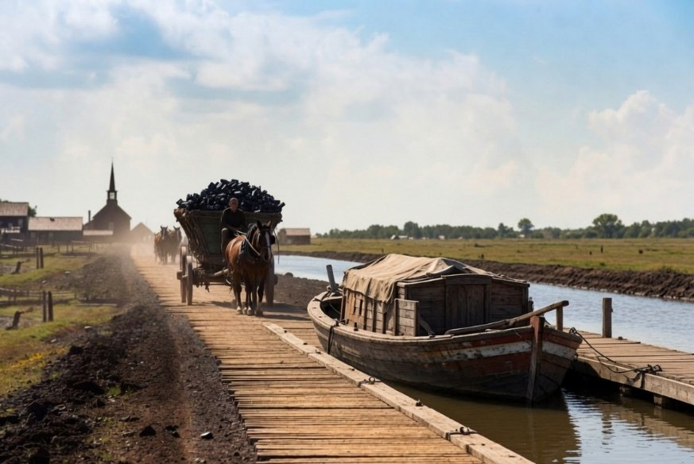
For the twenty years before 1852, wagons carried their load of iron products and ore northward from Cornwall, past the Cornwall mill, then Zinns Mill, and through Lebanon on 10th Street to Lights Landing. From there, boats on the Union Canal floated the heavy load through its system of locks either east to Reading or west to Middletown.
In Lebanon the canal passed between today's Guilford and Maple streets.
Various historical sources mention the difficulties of heavy-laden wagons passing along muddy roads, cutting ever deeper tracks in the old thoroughfares.
The Manheim and Lebanon Plank and Turnpike Road Company
Plank roads were becoming popular in Pennsylvania, and after twenty years of difficult passage to the canal, the idea of a plank road to Lebanon began in 1848, when the Pennsylvania legislature authorized the charter for the North and South Lebanon Road Company.
The legislature had been busy issuing charters for as many as 300 such roads in Pennsylvania. The issuing of stock with the promise of profit was like another form of gold rush for the region.
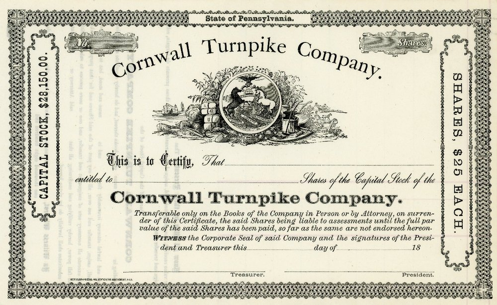
Lancaster lays claim to a slightly earlier plank road heading north through East Petersburg and up to Manheim. It was described as a plank path built along the existing highway. The planks were 10 feet wide, 2 inches thick, and laid upon stringers. Occasional turnouts provided the means to avoid collisions.
Pedestrians liked the plank road because it kept them from getting their shoes dirty, until a buggy would come racing along, forcing them to jump off into the mud. Avid horsemen enjoyed racing one another on the road, the "clatter of hooves" resounding on the wooden surface.
The success of the Lancaster road prompted interest in extending the road from Manheim up to Mt. Hope and the mines at Cornwall.
Also escalating the demand was the establishment of Cornwall's Anthracite Furnace by 1849 (curiously, the North Lebanon Railroad company also formed in 1850 for the same purpose of speeding the shipment of ore from Cornwall).
The name of the Lebanon road is a subject of some confusion, as in 1851 the legislature first chartered the Manheim and Lebanon Plank and Turnpike Road Company, setting the tolls at 4 cents per ton per mile. Then, in February 1852, Clement Grubb and his directors formed the Lebanon and Cornwall Plank Road Company.
The plank road took several years to develop. A May 28, 1852, newspaper reported the laying of planks had begun.
By November of 1852, an account announced that (in six months' time) a half-mile of the plank road had been laid southward towards Cornwall, with hopes of reaching the Horseshoe Pike by winter: "If the weather continues, a single track will be completed — for a more awful road than there is from here to the Horseshoe Pike in wintertime, we wouldn't desire to see, let alone travel."
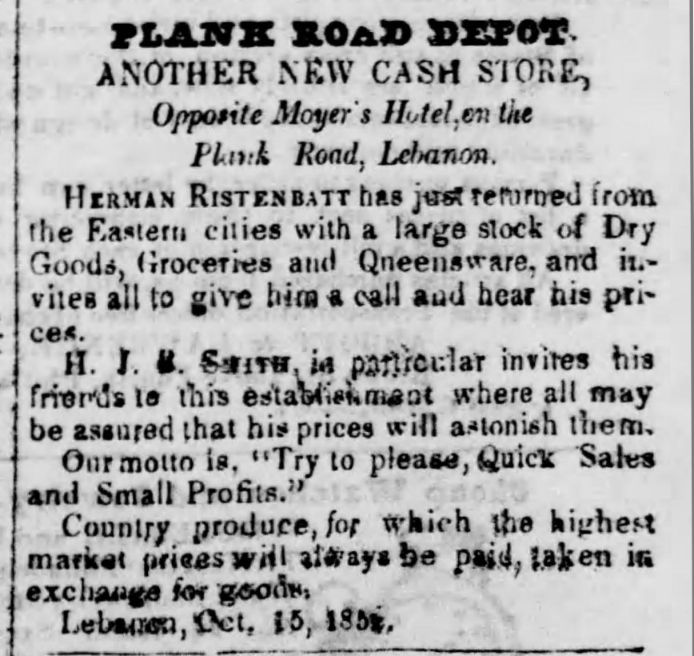
Even so, in that same month, business establishments in Lebanon were advertising their location on, or proximity to, the plank road, which was North 10th Street (long before it became the present southbound thoroughfare).
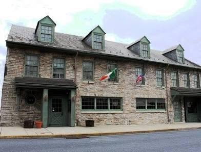
Another famous landmark, which remains at 10th and Cumberland, is the Farmer's Hotel. It was erected in 1760, and local legends claim Washington had stayed here when inspecting progress of the Union Canal.
Those legends emphasized the hotel's location as "at the corner of Cumberland Street and the Cornwall Plank Road."
The New Road Opens
Miraculously, the first week of January 1853 saw the opening of the road, one track, five miles long to Cornwall and ready to establish gates for collecting tolls. The newspaper account celebrated the valiant efforts of Samuel D. Krauser, who "has been indefatigable in his efforts to have the road finished before winter should set in." Present at the celebratory dinner were also the presidents of the Lancaster and Manheim road companies, making clear the intention of joining their roads to Lebanon's.
The article mentioned the importance of giving farmers a better means of getting their produce to market, while lamenting the absence of a railroad (which would not exist for at least two more years). However, it may be that the railroad "got there first," before the entire plank road had been realized.
By April 1853, the newspapers were describing business on the road as "brisk," so much so that the demand for ore exceeded the availability of teamsters to haul it. A wagon load was charged $1 per ton for the five-mile trip, about five times what the legislature had envisioned two years before.
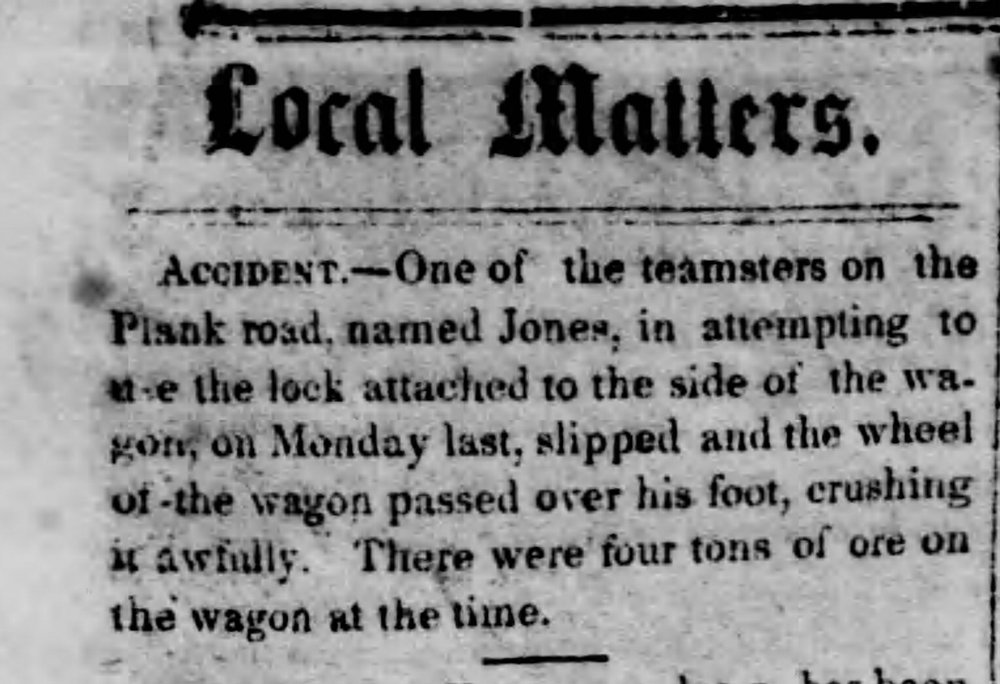
Improvements
The decade of the 1850s marked rapid changes, suggesting a "plank road bubble" for the investors who sought fortune from the toll road income.
The North Lebanon Railroad opened in 1855 (its name would change to the Cornwall Railroad in 1870), competing with the shipments of iron to the Union Canal. A flood caused severe damage to the canal in 1862. By 1885 it closed, as the east-west Lebanon Valley Railroad had been outperforming it since opening in 1857.
In 1860 the plank road changed its name briefly to the North Lebanon and Mount Hope Plank and Turnpike Road Company, and then to the Cornwall Turnpike Company in 1861.
Plank roads required frequent maintenance and replacement of the planks. The road was described as worn-out in 1860. George Weidel, a well-known citizen of Lebanon, had made his living harvesting timber from the Blue Mountains on the north side of the county, to be used to keep the Cornwall plank road in repair.
In his 1890 biography, Artemas Wilhelm, while still living at the Jackson House in 1861, is described as having purchased the worn-out road (probably a significant share) and became its president. "Under his management it was thoroughly changed and made one of the best macadamized roads in the country." He also went on to build the spiral railroad at Big Hill, renovated the Cornwall mansions, managed several industries, and became the manager of Robert H. Coleman's affairs.
"Macadam" conjures visions of a road paved with blacktop; however, the technique is named for its Scottish inventor, John Macadam, and was invented around 1820. It consists of layers of crushed stone, with finer stone dust helping to bind the stones, especially when rolled and compressed. A later improved "tar-mac" included the introduction of bituminous coal tar at the turn of the 20th century.
As president of the Cornwall Turnpike Company, Wilhelm held the position until he retired and resigned in 1902. The company kept offices at 905 Willow Street.
The turnpike existed as a plank road for less than nine years, ending in 1861. Having turned macadam, the old plank mystique resurfaced in the 1880s, first in 1888 and later in 1911, when digging sewer systems at 10th and Cumberland revealed planks and wooden culverts that had been built for drainage.
The twenty-foot section of plank road was discovered 18 inches under the surface of the street. And in a related story, enterprising County Treasurer-elect John E. Hartman, of 10th and Lehman streets, retrieved a piece of the old plank road from the workers to have a walnut cane made for himself.
Plank Roads — More Than You Wanted to Know
According to a historical report about the Newtown Square plank road, the idea of plank roads came from Russia and Canada, and was first used in 1846 when such a road was built from Syracuse, New York to Lake Oneida, about 16 miles.
The idea caught on quickly between 1846 and 1856, with the General Assembly chartering about 300 plank turnpike companies.
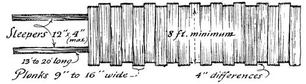
The configuration of a road seemed to simply be a set of wooden rails, across which are laid 8-foot planks, ranging from 2 to 4 inches thick and 9 to 16 inches wide. If, according to one description, the planks were placed loosely on the rails, perhaps it was possible to quickly lay up to 5 miles of the Cornwall road within a six-month period, at a rate of 100–200 planks per day.
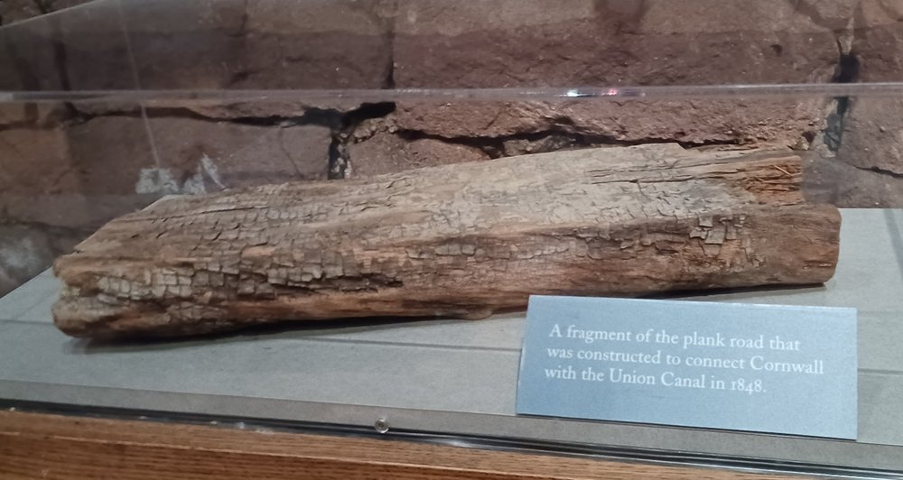
Another question is: where did all of those planks come from? The Cornwall Grist Mill had expanded to include a sawmill, which could have produced planks for the road passing just a hundred feet to the west. The Blue Mountains were also a source.
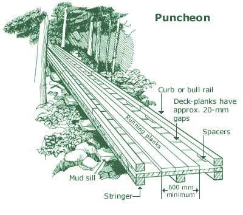
There are different types of planking. In addition to the simple example, Wikipedia offers a more substantial construction called a "puncheon," which, according to the illustration, not only has multiple stringers or sleepers, but running planks and curb rails that kept wagon wheels aligned, and perhaps allowed for wear induced by iron horseshoes.
Although the word "puncheon" does not appear in local descriptions, the fact that a "single track" had been reported completed suggests a more sophisticated design. The flat plank fragment on display at the Cornwall Iron Furnace could suggest either of the two design types.
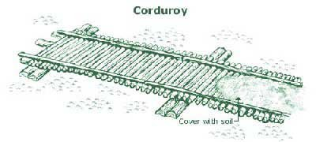
Another classic term mentioned generally were corduroy roads, with rough-hewn logs placed directly on the ground, providing traction in muddy or marshy areas. These might be as much as 16 feet wide, quickly constructed by felling nearby trees.
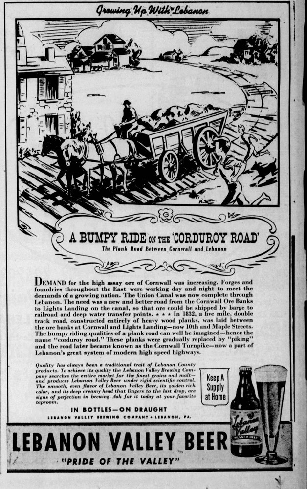
The rough, noisy ride was not very enjoyable; such roads did not allow good rainwater drainage, and the jarring made it hazardous for wagons and automobiles. Higher speed vehicles also caused greater wear.
In fact, when automobiles were used on the Cornwall Turnpike (not with planks, but gravel and crushed stone), the turnpike company increased the toll rate to account for increased maintenance.
Far from the bone-jarring rattle of corduroy roads, one source described the sensation of riding a plank road as similar to riding a sleigh.
Plank Road Etiquette and Behavior
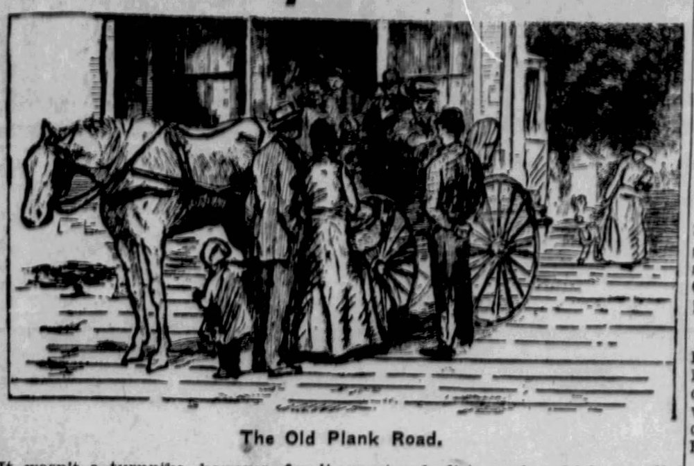
If two wagons met on a single-track road, one would have to pull off the road to let the other pass. Afterwards, getting the wagon wheels back on the track could be challenging. The planks were roughly aligned to make it easier for the wheel to catch the plank edge as it was pulled back up (this would have been more challenging if it had rails like a puncheon).
As a macadam road, the turnpike company was the target of public ire. Letters to the editor in 1893 concerned the width of the ditches along the Cornwall road. The turnpike claimed a roadbed 40 feet wide, making it difficult for wagons on cross-streets to pass without difficulty.
Henry Lowery, the tollkeeper residing in the toll gate house at the southern portion of the road, suffered a burglary one evening in May of 1886. The perpetrators broke in during the night, taking a "fine suit of clothes" and three dollars.
And would you believe vandalism was a problem? In 1897 the Cornwall Turnpike Company was offering a $25 reward to capture the "persons who placed tacks and broken glass on the pike for the purpose of puncturing bicycle tires."
Tolls and Toll Houses
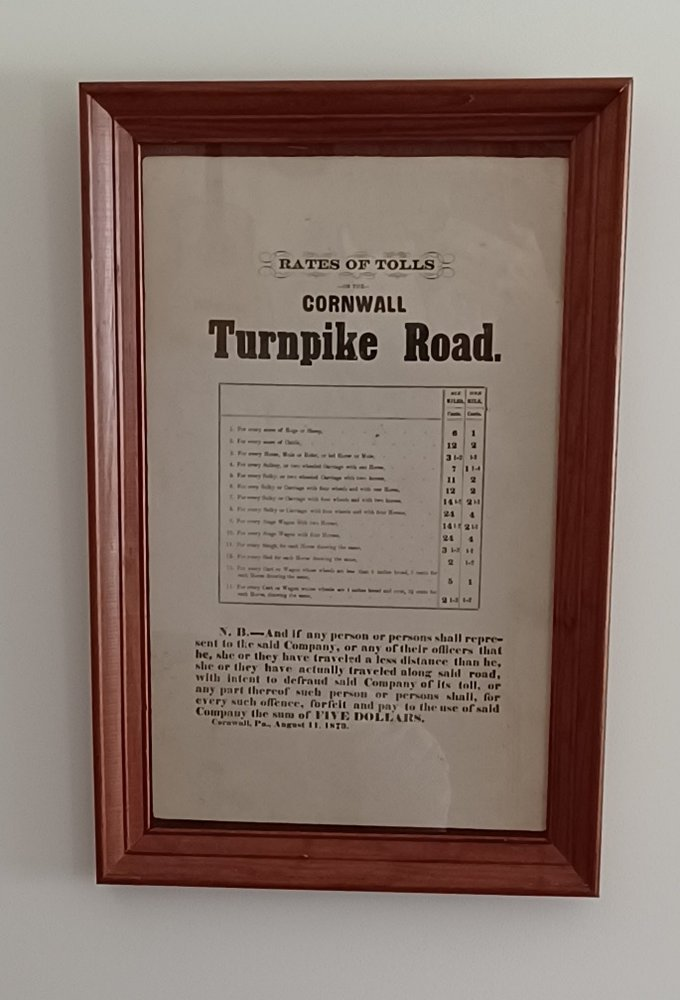
Another matter of "etiquette" was the honor system in toll collections.
There were two toll houses: Henry Lowery's house in North Cornwall, and the other in Hauckville, where Cornwall Road passes the Lebanon High School today. Both are located about two miles from the endpoints of the road, respectively.
On stopping at the toll house, a toll was assessed by the distance and the conveyance. In 1873 the toll ranged from a half-cent to 4 cents per mile; more for a larger wagon, and the maximum rate for four horses. A load of hogs, sheep, or cattle was assessed by the score. Personal conveyances, whether a sulky or carriage, were two cents for one or two horses, but four cents for four horses. A sleigh or sled was charged a half-cent per mile per horse.
As rates were charged by the mile, there were markers at every mile. Those who were caught understating their travel, with intent to "defraud said Company of its toll," were charged a penalty of five dollars — a significant deterrent.
Transition to a New Era
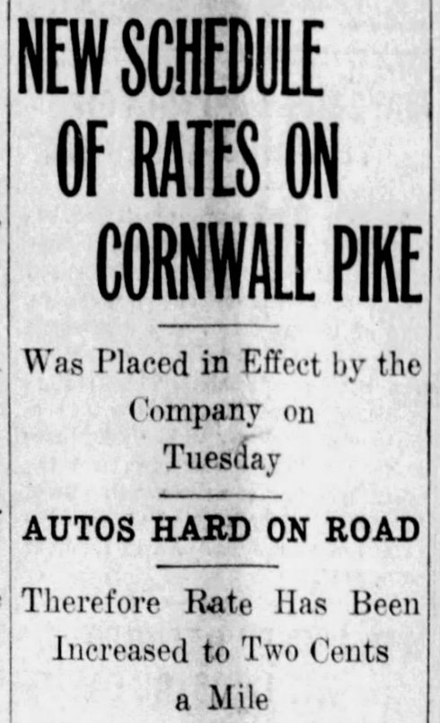
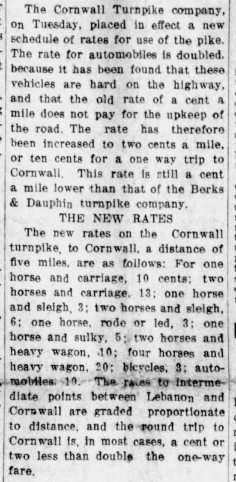
The introduction of the automobile on local roads created some problems for the turnpike, as well as some irritation to motorists, who in 1914 might prefer finding an alternate route than paying the outrageous sum of 10 cents to ride into Lebanon from Cornwall.
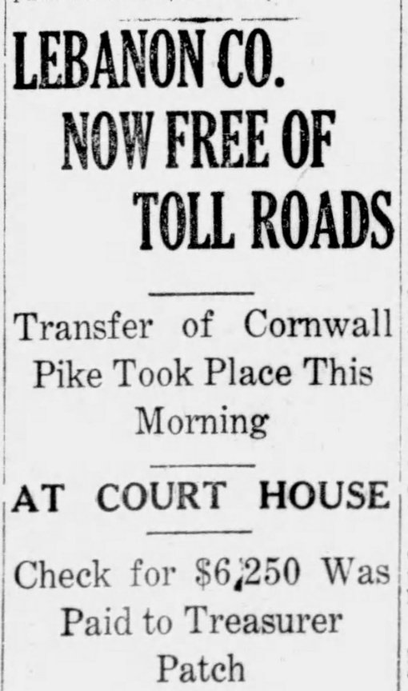
By 1918 Pennsylvania was eliminating local toll roads. For several months there was much discourse at the county and state level, deciding finally that the state would buy the Cornwall Pike for $6,250, as long as Lebanon County paid half of the price.
On the day of closing, the deputy state highway commissioner immediately traveled down the road to close the two toll houses (which would be retained to house the road keepers in charge of its maintenance) and declare the road open to public use, toll-free.
Retrospective
A 1916 photograph from the Lebanon County Historical Society archives depicts two women posing for the camera while sitting on a fence alongside the turnpike, enjoying an early spring day, with no vehicles in sight.
The road, whether you know it as Cornwall Road, the old Cornwall Turnpike, or briefly the "plank road," quietly testifies to the long-passed iron industry that drove economic development, and also the great farms of Lebanon Valley which continue to grace our landscape; may they continue to flourish.
Artemas Wilhelm enjoyed "his road," having moved from Jackson House in the 1860s. A map depicts his new house ("A. Wilhelm") across the road from the Coleman estate, where he managed widow Sue Ellen Coleman's affairs.
Traveling to Lebanon and back for his other duties, he would admire and later purchase the 62-acre farm from Samuel Erb on the road now known as Wilhelm Street.
On Sunday mornings, Sue Ellen Coleman, with children Robert and Anne, would order her carriage prepared for the journey to hear Rev. Abel preach at St. Luke's Episcopal Church at 6th and Chestnut streets. The new road, more direct and more comfortable, made for a pleasant journey.
Little remains of the Cornwall turnpike today, other than two old toll houses that became private residences, and a few mile-markers.
And this remnant: locals traveling down Cornwall Road today into Cornwall center notice the low, red sandstone wall, opposite Toy Town. When fashioned with iron gates, this became the grand entrance to the Robert H. Coleman property.
A similar wall faces Rt. 419/Freeman Drive up to the culvert over Snitz Creek. The old wall stops where the old road passed through his father's property.
A memo from Artemas Wilhelm in October 1860 specified several hundred feet of stone wall, for which the stone mason estimated about 3,400 cubic feet of stone at a cost of $185.00. Wilhelm's sketch indicated, as a reference point, "to turnpike."
Apparently, it had become time to redirect traffic and encourage use of the toll road. For his efforts, William Coleman passed away the following year.
Jackson House Story Updates
Research on this topic keeps turning up new information even after parts have gone to press. Part 2 on the Horseshoe Turnpike has been updated, showing the discovery of a 1787 map depicting "the great Road" over South Mountain. Today's 28th Division Highway follows the same path from Boyd Street to Brickerville as the great road did back then.
The National Register of Historic Places description of the Cornwall estate (now Cornwall Manor) declares the Jackson House building as Federal/Greek Revival period (dating 1760–1830), with features that suggest late-18th-century construction.
On examining pictures of the old Farmer's Hotel, built in 1760, there seem to be architectural similarities to Jackson House that would date it several decades before the assumed 1830 date. You decide.
Thanks for ever-encouraging support from Friends of the Cornwall Iron Furnace. In particular, Pat Rhen, with his insights and passion for local roads; and Mike Trump, his collection of artifacts and photographs, and who knows where all of the fallen turnpike markers are.
Originally published on LebTown, August 5, 2026.